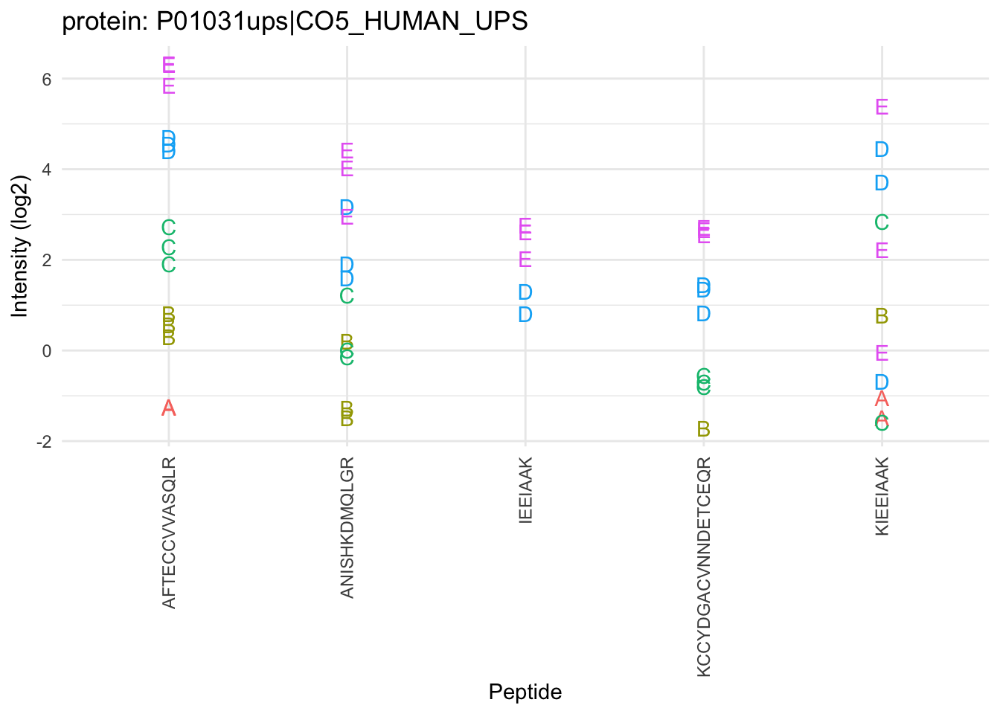
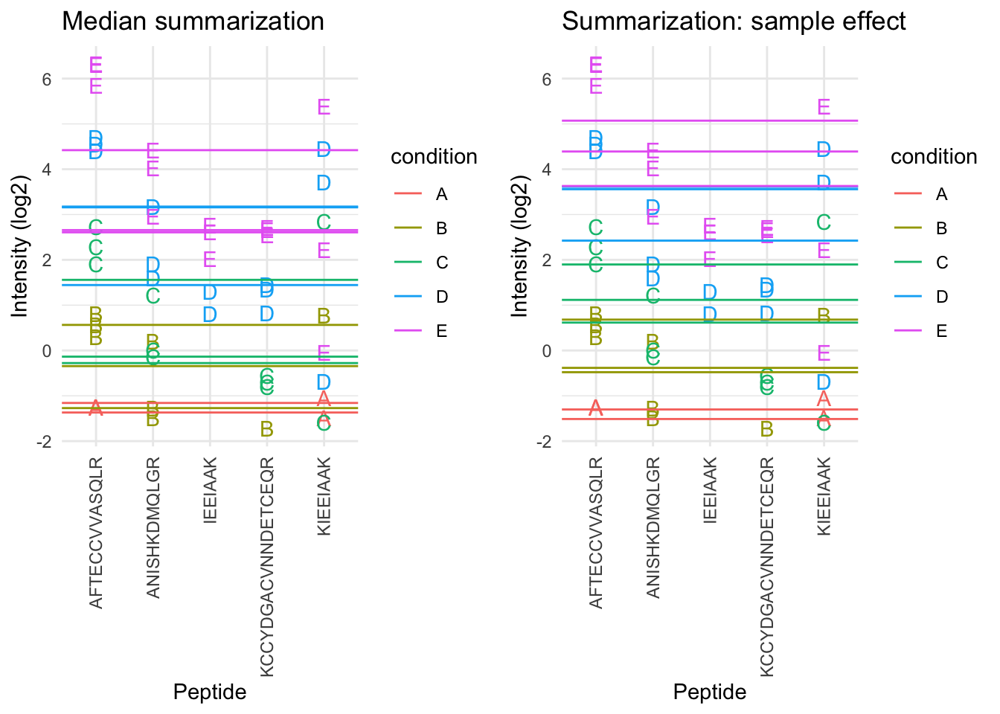
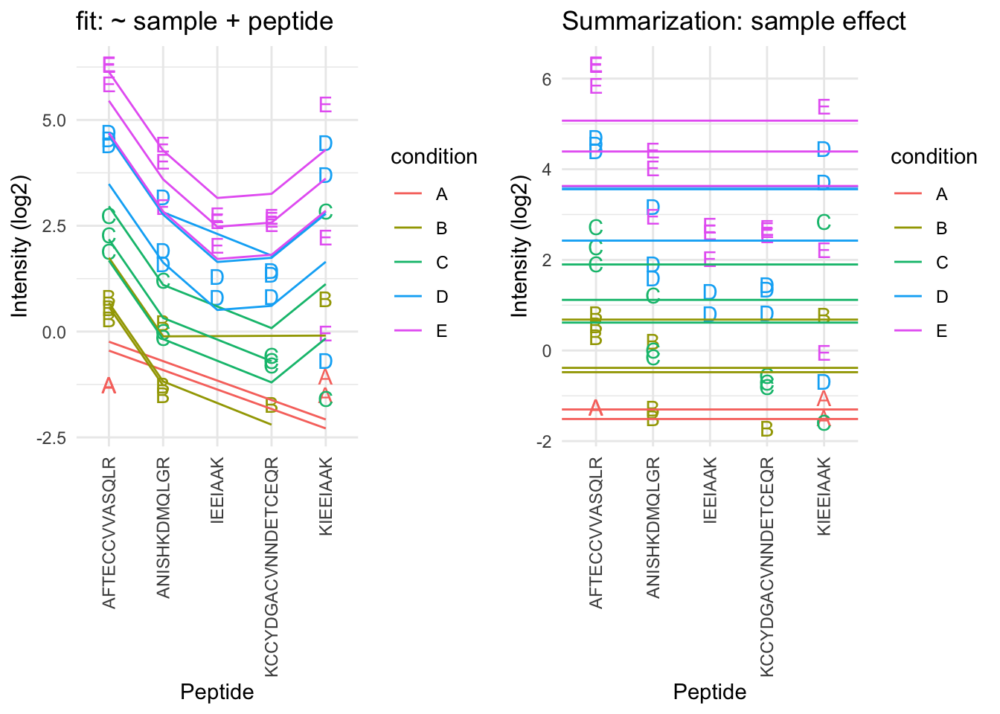
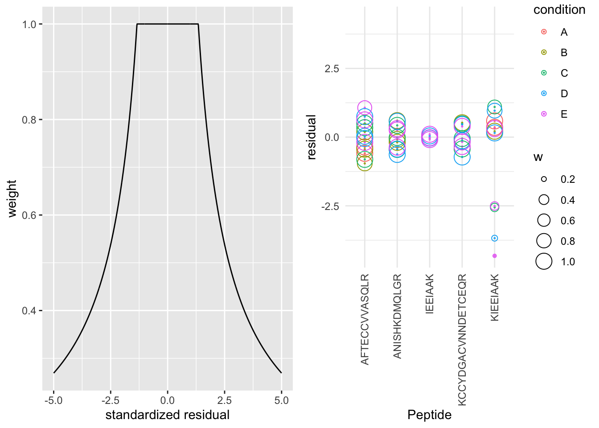

This is part of the online course Proteomics Data Analysis 2021 (PDA21)
Import the data in R
Load libraries
Click to see code
library(tidyverse)
library(limma)
library(QFeatures)
library(msqrob2)
library(plotly)
library(ggplot2)
library(gridExtra)
Read data
Click to see background and code
- We use a peptides.txt file from MS-data quantified with maxquant that contains MS1 intensities summarized at the peptide level.
peptidesFile <- "https://raw.githubusercontent.com/statOmics/PDA21/data/quantification/fullCptacDatasSetNotForTutorial/peptides.txt"
- Maxquant stores the intensity data for the different samples in columnns that start with Intensity. We can retreive the column names with the intensity data with the code below:
ecols <- grep("Intensity\\.", names(read.delim(peptidesFile)))
- Read the data and store it in QFeatures object
pe <- readQFeatures(
table = peptidesFile,
fnames = 1,
ecol = ecols,
name = "peptideRaw", sep="\t")
Design
Click to see background and code
## CharacterList of length 1
## [["peptideRaw"]] Intensity.6A_1 Intensity.6A_2 ... Intensity.6E_9
Note, that the sample names include the spike-in condition.
They also end on a number.
- 1-3 is from lab 1,
- 4-6 from lab 2 and
- 7-9 from lab 3.
We update the colData with information on the design
colData(pe)$lab <- rep(rep(paste0("lab",1:3),each=3),5) %>% as.factor
colData(pe)$condition <- pe[["peptideRaw"]] %>% colnames %>% substr(12,12) %>% as.factor
colData(pe)$spikeConcentration <- rep(c(A = 0.25, B = 0.74, C = 2.22, D = 6.67, E = 20),each = 9)
## DataFrame with 45 rows and 3 columns
## lab condition spikeConcentration
## <factor> <factor> <numeric>
## Intensity.6A_1 lab1 A 0.25
## Intensity.6A_2 lab1 A 0.25
## Intensity.6A_3 lab1 A 0.25
## Intensity.6A_4 lab2 A 0.25
## Intensity.6A_5 lab2 A 0.25
## ... ... ... ...
## Intensity.6E_5 lab2 E 20
## Intensity.6E_6 lab2 E 20
## Intensity.6E_7 lab3 E 20
## Intensity.6E_8 lab3 E 20
## Intensity.6E_9 lab3 E 20
Preprocessing
Filtering
Click to see code to filter the data
- Handling overlapping protein groups
In our approach a peptide can map to multiple proteins, as long as there is none of these proteins present in a smaller subgroup.
pe[["peptideLog"]] <-
pe[["peptideLog"]][rowData(pe[["peptideLog"]])$Proteins
%in% smallestUniqueGroups(rowData(pe[["peptideLog"]])$Proteins),]
- Remove reverse sequences (decoys) and contaminants
We now remove the contaminants, peptides that map to decoy sequences, and proteins which were only identified by peptides with modifications.
pe[["peptideLog"]] <- pe[["peptideLog"]][rowData(pe[["peptideLog"]])$Reverse != "+", ]
pe[["peptideLog"]] <- pe[["peptideLog"]][rowData(pe[["peptideLog"]])$
Potential.contaminant != "+", ]
- Drop peptides that were only identified in one sample
We keep peptides that were observed at last twice.
pe[["peptideLog"]] <- pe[["peptideLog"]][rowData(pe[["peptideLog"]])$nNonZero >= 2, ]
nrow(pe[["peptideLog"]])
## [1] 10478
We keep 10478 peptides upon filtering.
Normalization
Click to see R-code to normalize the data
pe <- normalize(pe,
i = "peptideLog",
name = "peptideNorm",
method = "center.median")
Peptide-level models
Summarization
Click to see code to make plot
prot <- "P01031ups|CO5_HUMAN_UPS"
data <- pe[["peptideNorm"]][
rowData(pe[["peptideNorm"]])$Proteins == prot,
colData(pe)$lab=="lab3"] %>%
assay %>%
as.data.frame %>%
rownames_to_column(var = "peptide") %>%
gather(sample, intensity, -peptide) %>%
mutate(condition = colData(pe)[sample,"condition"]) %>%
na.exclude
sumPlot <- data %>%
ggplot(aes(x = peptide, y = intensity, color = condition, group = sample, label = condition), show.legend = FALSE) +
geom_text(show.legend = FALSE) +
theme_minimal() +
theme(axis.text.x = element_text(angle = 90, vjust = 0.5, hjust = 1)) +
xlab("Peptide") +
ylab("Intensity (log2)") +
ggtitle(paste0("protein: ",prot))
Here, we will focus on the summarization of the intensities for protein P01031ups|CO5_HUMAN_UPS.

Model based summarization
We can use a linear peptide-level model to estimate the protein expression value while correcting for the peptide effect, i.e.
\[
y_{ip} = \beta_i^\text{sample}+\beta^{peptide}_{p} + \epsilon_{ip}
\]
Click to see code to make plot
sumMeanPepMod <- lm(intensity ~ -1 + sample + peptide,data)
sumMeanPep <- data.frame(
intensity=sumMeanPepMod$coef[grep("sample",names(sumMeanPepMod$coef))] + mean(data$intensity) - mean(sumMeanPepMod$coef[grep("sample",names(sumMeanPepMod$coef))]),
condition= names(sumMeanPepMod$coef)[grep("sample",names(sumMeanPepMod$coef))] %>% substr(18,18) %>% as.factor )
fitLmPlot <- sumPlot + geom_line(
data = data %>% mutate(fit=sumMeanPepMod$fitted.values),
mapping = aes(x=peptide, y=fit,color=condition, group=sample)) +
ggtitle("fit: ~ sample + peptide")
sumLmPlot <- sumPlot + geom_hline(
data = sumMeanPep,
mapping = aes(yintercept=intensity,color=condition)) +
ggtitle("Summarization: sample effect")
grid.arrange(sumMedianPlot, sumLmPlot, ncol=2)
## Warning: Removed 1 rows containing missing values (geom_hline).

By correcting for the peptide species the protein expression values are much better separated an better reflect differences in abundance induced by the spike-in condition.
Indeed, it shows that median summarisation that does not account for the peptide effect indeed overestimated the protein expression value in the small spike-in conditions and underestimated that in the large spike-in conditions.
Still there seem to be some issues with samples that for which the expression values are not well separated according to the spike-in condition.
A residual analysis clearly indicates potential issues:
Click to see code to make plot
resPlot <- data %>%
mutate(res=sumMeanPepMod$residuals) %>%
ggplot(aes(x = peptide, y = res, color = condition, label = condition), show.legend = FALSE) +
geom_point(shape=21) +
theme_minimal() +
theme(axis.text.x = element_text(angle = 90, vjust = 0.5, hjust = 1)) +
xlab("Peptide") +
ylab("residual") +
ggtitle("residuals: ~ sample + peptide")
grid.arrange(fitLmPlot, resPlot, nrow = 1)
grid.arrange(fitLmPlot, sumLmPlot, nrow = 1)

- The residual plot shows some large outliers for peptide KIEEIAAK.
- Indeed, in the original plot the intensities for this peptide do not seem to line up very well with the concentration.
- This induces a bias in the summarization for some of the samples (e.g. for D and E)
Robust summarization using a peptide-level linear model
\[
y_{ip} = \beta_i^\text{sample}+\beta^{peptide}_{p} + \epsilon_{ip}
\]
- Ordinary least squares: estimate \(\beta\) that minimizes \[
\text{OLS}: \sum\limits_{i,p} \epsilon_{ip}^2 = \sum\limits_{i,p}(y_{ip}-\beta_i^\text{sample}-\beta_p^\text{peptide})^2
\]
We replace OLS by M-estimation with loss function \[
\text{OLS}: \sum\limits_{i,p} w_{ip}\epsilon_{ip}^2 = \sum\limits_{i,p}w_{ip}(y_{ip}-\beta_i^\text{sample}-\beta_p^\text{peptide})^2
\]
- Iteratively fit model with observation weights \(w_{ip}\) until convergence
- The weights are calculated based on standardized residuals
Click to see code to make plot
sumMeanPepRobMod <- MASS::rlm(intensity ~ -1 + sample + peptide,data)
resRobPlot <- data %>%
mutate(res = sumMeanPepRobMod$residuals,
w = sumMeanPepRobMod$w) %>%
ggplot(aes(x = peptide, y = res, color = condition, label = condition,size=w), show.legend = FALSE) +
geom_point(shape=21,size=.2) +
geom_point(shape=21) +
theme_minimal() +
theme(axis.text.x = element_text(angle = 90, vjust = 0.5, hjust = 1)) +
xlab("Peptide") +
ylab("residual") +
ylim(c(-1,1)*max(abs(sumMeanPepRobMod$residuals)))
weightPlot <- qplot(
seq(-5,5,.01),
MASS::psi.huber(seq(-5,5,.01)),
geom="path") +
xlab("standardized residual") +
ylab("weight")
grid.arrange(weightPlot,resRobPlot,nrow=1)

- We clearly see that the weights in the M-estimation procedure will down-weight errors associated with outliers for peptide KIEEIAAK.
Click to see code to make plot
sumMeanPepRob <- data.frame(
intensity=sumMeanPepRobMod$coef[grep("sample",names(sumMeanPepRobMod$coef))] + mean(data$intensity) - mean(sumMeanPepRobMod$coef[grep("sample",names(sumMeanPepRobMod$coef))]),
condition= names(sumMeanPepRobMod$coef)[grep("sample",names(sumMeanPepRobMod$coef))] %>% substr(18,18) %>% as.factor )
sumRlmPlot <- sumPlot + geom_hline(
data=sumMeanPepRob,
mapping=aes(yintercept=intensity,color=condition)) +
ggtitle("Robust")
grid.arrange(sumLmPlot + ggtitle("OLS"), sumRlmPlot, nrow = 1)
 - Robust regresion results in a better separation between the protein expression values for the different samples according to their spike-in concentration.
- Robust regresion results in a better separation between the protein expression values for the different samples according to their spike-in concentration.
maxLFQ summarization

MS-stats summarization
- MS-stats also uses a robust peptide level model to perform the summarization, however, they typically first impute missing values
Comparison summarization methods
Estimation of differential abundance using peptide level model
- Instead of summarising the data we can also directly model the data at the peptide-level.
- But, we will have to address the pseudo-replication.
\[
y_{iclp}= \beta_0 + \beta_c^\text{condition} + \beta_l^\text{lab} + \beta_p^\text{peptide} + u_s^\text{sample} + \epsilon_{iclp}
\]
protein-level
- \(\beta^\text{condition}_c\): spike-in condition
- \(\beta^\text{condition}_c\): lab effect
- \(u_{r}^\text{run}\sim N\left(0,\sigma^2_\text{run}\right) \rightarrow\) random effect addresses pseudo-replication
peptide-level
- \(\beta_{p}^\text{peptide}\): peptide effect
- \(\epsilon_{rp} \sim N\left(0,\sigma^2_{\epsilon}\right)\) within sample (run) error
DA estimates: \[
\log_2FC_{B-A}=\beta^\text{condition}_B
\] \[
\log_2FC_{C-B}=\beta^\text{condition}_C - \beta^\text{condition}_B
\]
Mixed peptide-level models are implemented in msqrob2
It has the advantages that
- it correctly addresses the difference levels of variability in the data
- it avoids summarisation and therefore also accounts for the difference in the number of peptides that are observed in each sample
- more powerful analysis
It has the disadvantage that
- protein summaries are no longer available for plotting
- it is difficult to correctly specify the degrees of freedom for the test-statistic leading to inference that is too liberal in experiments with small sample size
- sometimes sample level random effect variance are estimated to be zero, then the pseudo-replication is not addressed leading to inference that is too liberal for these specific proteins
- they are much more difficult to disseminate to users with limited background in statistics
Hence, for this course we opted to use peptide-level models for summarization, but not for directly inferring on the differential expression at the protein-level.
Sticker, A., L. Goeminne, L. Martens, and L. Clement. 2020. “Robust Summarization and Inference in Proteome-wide Label-free Quantification.” Mol Cell Proteomics 19 (7): 1209–19.
LS0tCnRpdGxlOiAiU3RhdGlzdGljYWwgTWV0aG9kcyBmb3IgUXVhbnRpdGF0aXZlIE1TLWJhc2VkIFByb3Rlb21pY3M6IFBlcHRpZGUtbGV2ZWwgTW9kZWxzIGZvciBTdW1tYXJpemF0aW9uIGFuZCBJbmZlcmVuY2UiCmF1dGhvcjogIkxpZXZlbiBDbGVtZW50IgpkYXRlOiAiW3N0YXRPbWljc10oaHR0cHM6Ly9zdGF0b21pY3MuZ2l0aHViLmlvKSwgR2hlbnQgVW5pdmVyc2l0eSIKb3V0cHV0OgogICAgaHRtbF9kb2N1bWVudDoKICAgICAgY29kZV9kb3dubG9hZDogdHJ1ZQogICAgICB0aGVtZTogY29zbW8KICAgICAgdG9jOiB0cnVlCiAgICAgIHRvY19mbG9hdDogdHJ1ZQogICAgICBoaWdobGlnaHQ6IHRhbmdvCiAgICAgIG51bWJlcl9zZWN0aW9uczogdHJ1ZQogICAgcGRmX2RvY3VtZW50OgogICAgICB0b2M6IHRydWUKICAgICAgbnVtYmVyX3NlY3Rpb25zOiB0cnVlCmxpbmtjb2xvcjogYmx1ZQp1cmxjb2xvcjogYmx1ZQpjaXRlY29sb3I6IGJsdWUKCmJpYmxpb2dyYXBoeTogbXNxcm9iMi5iaWIKICAgICAgCi0tLQoKPGEgcmVsPSJsaWNlbnNlIiBocmVmPSJodHRwczovL2NyZWF0aXZlY29tbW9ucy5vcmcvbGljZW5zZXMvYnktbmMtc2EvNC4wIj48aW1nIGFsdD0iQ3JlYXRpdmUgQ29tbW9ucyBMaWNlbnNlIiBzdHlsZT0iYm9yZGVyLXdpZHRoOjAiIHNyYz0iaHR0cHM6Ly9pLmNyZWF0aXZlY29tbW9ucy5vcmcvbC9ieS1uYy1zYS80LjAvODh4MzEucG5nIiAvPjwvYT4KClRoaXMgaXMgcGFydCBvZiB0aGUgb25saW5lIGNvdXJzZSBbUHJvdGVvbWljcyBEYXRhIEFuYWx5c2lzIDIwMjEgKFBEQTIxKV0oaHR0cHM6Ly9zdGF0b21pY3MuZ2l0aHViLmlvL1BEQTIxLykKCiMgSW1wb3J0IHRoZSBkYXRhIGluIFIgCgojIyBMb2FkIGxpYnJhcmllcyAKCjxkZXRhaWxzPjxzdW1tYXJ5PiBDbGljayB0byBzZWUgY29kZSA8L3N1bW1hcnk+PHA+CmBgYHtyLCB3YXJuaW5nPUZBTFNFLCBtZXNzYWdlPUZBTFNFfQpsaWJyYXJ5KHRpZHl2ZXJzZSkKbGlicmFyeShsaW1tYSkKbGlicmFyeShRRmVhdHVyZXMpCmxpYnJhcnkobXNxcm9iMikKbGlicmFyeShwbG90bHkpCmxpYnJhcnkoZ2dwbG90MikKbGlicmFyeShncmlkRXh0cmEpCmBgYAo8L3A+PC9kZXRhaWxzPgoKIyMgUmVhZCBkYXRhIAoKPGRldGFpbHM+PHN1bW1hcnk+IENsaWNrIHRvIHNlZSBiYWNrZ3JvdW5kIGFuZCBjb2RlIDwvc3VtbWFyeT48cD4KMS4gV2UgdXNlIGEgcGVwdGlkZXMudHh0IGZpbGUgZnJvbSBNUy1kYXRhIHF1YW50aWZpZWQgd2l0aCBtYXhxdWFudCB0aGF0IApjb250YWlucyBNUzEgaW50ZW5zaXRpZXMgc3VtbWFyaXplZCBhdCB0aGUgcGVwdGlkZSBsZXZlbC4gCmBgYHtyfQpwZXB0aWRlc0ZpbGUgPC0gImh0dHBzOi8vcmF3LmdpdGh1YnVzZXJjb250ZW50LmNvbS9zdGF0T21pY3MvUERBMjEvZGF0YS9xdWFudGlmaWNhdGlvbi9mdWxsQ3B0YWNEYXRhc1NldE5vdEZvclR1dG9yaWFsL3BlcHRpZGVzLnR4dCIKYGBgCgoyLiBNYXhxdWFudCBzdG9yZXMgdGhlIGludGVuc2l0eSBkYXRhIGZvciB0aGUgZGlmZmVyZW50IHNhbXBsZXMgaW4gY29sdW1ubnMgdGhhdCBzdGFydCB3aXRoIEludGVuc2l0eS4gV2UgY2FuIHJldHJlaXZlIHRoZSBjb2x1bW4gbmFtZXMgd2l0aCB0aGUgaW50ZW5zaXR5IGRhdGEgd2l0aCB0aGUgY29kZSBiZWxvdzogCgpgYGB7cn0KZWNvbHMgPC0gZ3JlcCgiSW50ZW5zaXR5XFwuIiwgbmFtZXMocmVhZC5kZWxpbShwZXB0aWRlc0ZpbGUpKSkKYGBgCgozLiBSZWFkIHRoZSBkYXRhIGFuZCBzdG9yZSBpdCBpbiAgUUZlYXR1cmVzIG9iamVjdCAKCmBgYHtyfQpwZSA8LSByZWFkUUZlYXR1cmVzKAogIHRhYmxlID0gcGVwdGlkZXNGaWxlLAogIGZuYW1lcyA9IDEsCiAgZWNvbCA9IGVjb2xzLAogIG5hbWUgPSAicGVwdGlkZVJhdyIsIHNlcD0iXHQiKQpgYGAKPC9wPjwvZGV0YWlscz4KCiMjIERlc2lnbgoKPGRldGFpbHM+PHN1bW1hcnk+IENsaWNrIHRvIHNlZSBiYWNrZ3JvdW5kIGFuZCBjb2RlIDwvc3VtbWFyeT48cD4KCmBgYHtyfSAKcGUgJT4lIGNvbG5hbWVzCmBgYAoKLSBOb3RlLCB0aGF0IHRoZSBzYW1wbGUgbmFtZXMgaW5jbHVkZSB0aGUgc3Bpa2UtaW4gY29uZGl0aW9uLiAKLSBUaGV5IGFsc28gZW5kIG9uIGEgbnVtYmVyLiAKICAKICAtIDEtMyBpcyBmcm9tIGxhYiAxLCAKICAtIDQtNiBmcm9tIGxhYiAyIGFuZCAKICAtIDctOSBmcm9tIGxhYiAzLiAKCi0gV2UgdXBkYXRlIHRoZSBjb2xEYXRhIHdpdGggaW5mb3JtYXRpb24gb24gdGhlIGRlc2lnbgoKYGBge3J9CmNvbERhdGEocGUpJGxhYiA8LSByZXAocmVwKHBhc3RlMCgibGFiIiwxOjMpLGVhY2g9MyksNSkgJT4lIGFzLmZhY3Rvcgpjb2xEYXRhKHBlKSRjb25kaXRpb24gPC0gcGVbWyJwZXB0aWRlUmF3Il1dICU+JSBjb2xuYW1lcyAlPiUgc3Vic3RyKDEyLDEyKSAlPiUgYXMuZmFjdG9yCmNvbERhdGEocGUpJHNwaWtlQ29uY2VudHJhdGlvbiA8LSByZXAoYyhBID0gMC4yNSwgQiA9IDAuNzQsIEMgPSAyLjIyLCBEID0gNi42NywgRSA9IDIwKSxlYWNoID0gOSkKYGBgCgotIFdlIGV4cGxvcmUgdGhlIGNvbERhdGEKCmBgYHtyfQpjb2xEYXRhKHBlKQpgYGAKCjwvcD48L2RldGFpbHM+CgojIyBQcmVwcm9jZXNzaW5nCgojIyMgTG9nLXRyYW5zZm9ybQoKPGRldGFpbHM+PHN1bW1hcnk+IENsaWNrIHRvIHNlZSBjb2RlIHRvIGxvZy10cmFuc2Zyb20gdGhlIGRhdGEgPC9zdW1tYXJ5PjxwPgotIFdlIGNhbGN1bGF0ZSBob3cgbWFueSBub24gemVybyBpbnRlbnNpdGllcyB3ZSBoYXZlIGZvciBlYWNoIHBlcHRpZGUgYW5kIHRoaXMgY2FuIGJlIHVzZWZ1bCBmb3IgZmlsdGVyaW5nLgoKYGBge3J9CnJvd0RhdGEocGVbWyJwZXB0aWRlUmF3Il1dKSRuTm9uWmVybyA8LSByb3dTdW1zKGFzc2F5KHBlW1sicGVwdGlkZVJhdyJdXSkgPiAwKQpgYGAKCgotIFBlcHRpZGVzIHdpdGggemVybyBpbnRlbnNpdGllcyBhcmUgbWlzc2luZyBwZXB0aWRlcyBhbmQgc2hvdWxkIGJlIHJlcHJlc2VudAp3aXRoIGEgYE5BYCB2YWx1ZSByYXRoZXIgdGhhbiBgMGAuCgpgYGB7cn0KcGUgPC0gemVyb0lzTkEocGUsICJwZXB0aWRlUmF3IikgIyBjb252ZXJ0IDAgdG8gTkEKYGBgCgotIExvZ3RyYW5zZm9ybSBkYXRhIHdpdGggYmFzZSAyCgpgYGB7cn0KcGUgPC0gbG9nVHJhbnNmb3JtKHBlLCBiYXNlID0gMiwgaSA9ICJwZXB0aWRlUmF3IiwgbmFtZSA9ICJwZXB0aWRlTG9nIikKYGBgCjwvcD48L2RldGFpbHM+CgoKIyMjIEZpbHRlcmluZwoKPGRldGFpbHM+PHN1bW1hcnk+IENsaWNrIHRvIHNlZSBjb2RlIHRvIGZpbHRlciB0aGUgZGF0YSA8L3N1bW1hcnk+PHA+CgoxLiBIYW5kbGluZyBvdmVybGFwcGluZyBwcm90ZWluIGdyb3VwcwoKSW4gb3VyIGFwcHJvYWNoIGEgcGVwdGlkZSBjYW4gbWFwIHRvIG11bHRpcGxlIHByb3RlaW5zLCBhcyBsb25nIGFzIHRoZXJlIGlzCm5vbmUgb2YgdGhlc2UgcHJvdGVpbnMgcHJlc2VudCBpbiBhIHNtYWxsZXIgc3ViZ3JvdXAuCgpgYGB7cn0KcGVbWyJwZXB0aWRlTG9nIl1dIDwtCiBwZVtbInBlcHRpZGVMb2ciXV1bcm93RGF0YShwZVtbInBlcHRpZGVMb2ciXV0pJFByb3RlaW5zCiAlaW4lIHNtYWxsZXN0VW5pcXVlR3JvdXBzKHJvd0RhdGEocGVbWyJwZXB0aWRlTG9nIl1dKSRQcm90ZWlucyksXQpgYGAKCjIuIFJlbW92ZSByZXZlcnNlIHNlcXVlbmNlcyAoZGVjb3lzKSBhbmQgY29udGFtaW5hbnRzCgpXZSBub3cgcmVtb3ZlIHRoZSBjb250YW1pbmFudHMsIHBlcHRpZGVzIHRoYXQgbWFwIHRvIGRlY295IHNlcXVlbmNlcywgYW5kIHByb3RlaW5zCndoaWNoIHdlcmUgb25seSBpZGVudGlmaWVkIGJ5IHBlcHRpZGVzIHdpdGggbW9kaWZpY2F0aW9ucy4KCmBgYHtyfQpwZVtbInBlcHRpZGVMb2ciXV0gPC0gcGVbWyJwZXB0aWRlTG9nIl1dW3Jvd0RhdGEocGVbWyJwZXB0aWRlTG9nIl1dKSRSZXZlcnNlICE9ICIrIiwgXQpwZVtbInBlcHRpZGVMb2ciXV0gPC0gcGVbWyJwZXB0aWRlTG9nIl1dW3Jvd0RhdGEocGVbWyJwZXB0aWRlTG9nIl1dKSQKICAgIFBvdGVudGlhbC5jb250YW1pbmFudCAhPSAiKyIsIF0KYGBgCgozLiBEcm9wIHBlcHRpZGVzIHRoYXQgd2VyZSBvbmx5IGlkZW50aWZpZWQgaW4gb25lIHNhbXBsZQoKV2Uga2VlcCBwZXB0aWRlcyB0aGF0IHdlcmUgb2JzZXJ2ZWQgYXQgbGFzdCB0d2ljZS4KCmBgYHtyfQpwZVtbInBlcHRpZGVMb2ciXV0gPC0gcGVbWyJwZXB0aWRlTG9nIl1dW3Jvd0RhdGEocGVbWyJwZXB0aWRlTG9nIl1dKSRuTm9uWmVybyA+PSAyLCBdCm5yb3cocGVbWyJwZXB0aWRlTG9nIl1dKQpgYGAKCldlIGtlZXAgYHIgbnJvdyhwZVtbInBlcHRpZGVMb2ciXV0pYCBwZXB0aWRlcyB1cG9uIGZpbHRlcmluZy4KPC9wPjwvZGV0YWlscz4KCiMjIE5vcm1hbGl6YXRpb24gCgo8ZGV0YWlscz48c3VtbWFyeT4gQ2xpY2sgdG8gc2VlIFItY29kZSB0byBub3JtYWxpemUgdGhlIGRhdGEgPC9zdW1tYXJ5PjxwPgpgYGB7cn0KcGUgPC0gbm9ybWFsaXplKHBlLCAKICAgICAgICAgICAgICAgIGkgPSAicGVwdGlkZUxvZyIsIAogICAgICAgICAgICAgICAgbmFtZSA9ICJwZXB0aWRlTm9ybSIsIAogICAgICAgICAgICAgICAgbWV0aG9kID0gImNlbnRlci5tZWRpYW4iKQpgYGAKPC9wPjwvZGV0YWlscz4KCi0tLQoKIyBQZXB0aWRlLWxldmVsIG1vZGVscyAKCiMjIFN1bW1hcml6YXRpb24gCgoKPGRldGFpbHM+PHN1bW1hcnk+IENsaWNrIHRvIHNlZSBjb2RlIHRvIG1ha2UgcGxvdCA8L3N1bW1hcnk+PHA+CmBgYHtyIHBsb3QgPSBGQUxTRX0KCnByb3QgPC0gIlAwMTAzMXVwc3xDTzVfSFVNQU5fVVBTIgpkYXRhIDwtIHBlW1sicGVwdGlkZU5vcm0iXV1bCiAgcm93RGF0YShwZVtbInBlcHRpZGVOb3JtIl1dKSRQcm90ZWlucyA9PSBwcm90LAogIGNvbERhdGEocGUpJGxhYj09ImxhYjMiXSAlPiUKICBhc3NheSAlPiUKICBhcy5kYXRhLmZyYW1lICU+JQogIHJvd25hbWVzX3RvX2NvbHVtbih2YXIgPSAicGVwdGlkZSIpICU+JQogIGdhdGhlcihzYW1wbGUsIGludGVuc2l0eSwgLXBlcHRpZGUpICU+JSAKICBtdXRhdGUoY29uZGl0aW9uID0gY29sRGF0YShwZSlbc2FtcGxlLCJjb25kaXRpb24iXSkgJT4lCiAgbmEuZXhjbHVkZQpzdW1QbG90IDwtIGRhdGEgJT4lCiAgZ2dwbG90KGFlcyh4ID0gcGVwdGlkZSwgeSA9IGludGVuc2l0eSwgY29sb3IgPSBjb25kaXRpb24sIGdyb3VwID0gc2FtcGxlLCBsYWJlbCA9IGNvbmRpdGlvbiksIHNob3cubGVnZW5kID0gRkFMU0UpICsKICBnZW9tX3RleHQoc2hvdy5sZWdlbmQgPSBGQUxTRSkgKwogIHRoZW1lX21pbmltYWwoKSArCiAgdGhlbWUoYXhpcy50ZXh0LnggPSBlbGVtZW50X3RleHQoYW5nbGUgPSA5MCwgdmp1c3QgPSAwLjUsIGhqdXN0ID0gMSkpICsKICB4bGFiKCJQZXB0aWRlIikgKyAKICB5bGFiKCJJbnRlbnNpdHkgKGxvZzIpIikgKwogIGdndGl0bGUocGFzdGUwKCJwcm90ZWluOiAiLHByb3QpKQpgYGAKPC9wPjwvZGV0YWlscz4KCgpIZXJlLCB3ZSB3aWxsIGZvY3VzIG9uIHRoZSBzdW1tYXJpemF0aW9uIG9mIHRoZSBpbnRlbnNpdGllcyBmb3IgcHJvdGVpbiBgciBwcm90YC4KCmBgYHtyfQpzdW1QbG90CmBgYAoKIyMjIE1lZGlhbiBzdW1tYXJpemF0aW9uCgpXZSBmaXJzdCBldmFsdWF0ZSBtZWRpYW4gc3VtbWFyaXphdGlvbiBmb3IgcHJvdGVpbiBgciBwcm90YC4KCjxkZXRhaWxzPjxzdW1tYXJ5PiBDbGljayB0byBzZWUgY29kZSB0byBtYWtlIHBsb3QgPC9zdW1tYXJ5PjxwPgpgYGB7cn0KZGF0YUhscCA8LSBwZVtbInBlcHRpZGVOb3JtIl1dWwogICAgcm93RGF0YShwZVtbInBlcHRpZGVOb3JtIl1dKSRQcm90ZWlucyA9PSBwcm90LAogICAgY29sRGF0YShwZSkkbGFiPT0ibGFiMyJdICU+JSBhc3NheSAKCnN1bU1lZGlhbiA8LSBkYXRhLmZyYW1lKAogIGludGVuc2l0eT0gZGF0YUhscAogICAgJT4lIGNvbE1lZGlhbnMobmEucm09VFJVRSkKICAsCiAgY29uZGl0aW9uPSBjb2xuYW1lcyhkYXRhSGxwKSAlPiUgc3Vic3RyKDEyLDEyKSAlPiUgYXMuZmFjdG9yICkKCnN1bU1lZGlhblBsb3QgPC0gc3VtUGxvdCArIAogIGdlb21faGxpbmUoCiAgICBkYXRhID0gc3VtTWVkaWFuLAogICAgbWFwcGluZyA9IGFlcyh5aW50ZXJjZXB0PWludGVuc2l0eSxjb2xvcj1jb25kaXRpb24pKSArIAogIGdndGl0bGUoIk1lZGlhbiBzdW1tYXJpemF0aW9uIikKYGBgCjwvcD48L2RldGFpbHM+CgpgYGB7cn0Kc3VtTWVkaWFuUGxvdApgYGAKCgotIFRoZSBzYW1wbGUgbWVkaWFucyBhcmUgbm90IGEgZ29vZCBlc3RpbWF0ZSBmb3IgdGhlIHByb3RlaW4gZXhwcmVzc2lvbiB2YWx1ZS4gCi0gSW5kZWVkLCB0aGV5IGRvIG5vdCBhY2NvdW50IGZvciBkaWZmZXJlbmNlcyBpbiBwZXB0aWRlIGVmZmVjdHMKLSBQZXB0aWRlcyB0aGF0IGlvbml6ZSBwb29ybHkgYXJlIGFsc28gcGlja2VkIHVwIGluIHNhbXBsZXMgd2l0aCBoaWdoIHNwaWtlLWluIGNvbmNlbmNlbnRyYXRpb24gYW5kIG5vdCBpbiBzYW1wbGVzIHdpdGggbG93IHNwaWtlLWluIGNvbmNlbnRyYXRpb24KLSBUaGlzIGludHJvZHVjZXMgYSBiaWFzLiAKCiMjIyBNb2RlbCBiYXNlZCBzdW1tYXJpemF0aW9uCgpXZSBjYW4gdXNlIGEgbGluZWFyIHBlcHRpZGUtbGV2ZWwgbW9kZWwgdG8gZXN0aW1hdGUgdGhlIHByb3RlaW4gZXhwcmVzc2lvbiB2YWx1ZSB3aGlsZSBjb3JyZWN0aW5nIGZvciB0aGUgcGVwdGlkZSBlZmZlY3QsIGkuZS4gCgokJCAKeV97aXB9ID0gXGJldGFfaV5cdGV4dHtzYW1wbGV9K1xiZXRhXntwZXB0aWRlfV97cH0gKyBcZXBzaWxvbl97aXB9CiQkCgoKPGRldGFpbHM+PHN1bW1hcnk+IENsaWNrIHRvIHNlZSBjb2RlIHRvIG1ha2UgcGxvdCA8L3N1bW1hcnk+PHA+CmBgYHtyfQpzdW1NZWFuUGVwTW9kIDwtIGxtKGludGVuc2l0eSB+IC0xICsgc2FtcGxlICsgcGVwdGlkZSxkYXRhKQoKc3VtTWVhblBlcCA8LSBkYXRhLmZyYW1lKAogIGludGVuc2l0eT1zdW1NZWFuUGVwTW9kJGNvZWZbZ3JlcCgic2FtcGxlIixuYW1lcyhzdW1NZWFuUGVwTW9kJGNvZWYpKV0gKyBtZWFuKGRhdGEkaW50ZW5zaXR5KSAtIG1lYW4oc3VtTWVhblBlcE1vZCRjb2VmW2dyZXAoInNhbXBsZSIsbmFtZXMoc3VtTWVhblBlcE1vZCRjb2VmKSldKSwKICBjb25kaXRpb249IG5hbWVzKHN1bU1lYW5QZXBNb2QkY29lZilbZ3JlcCgic2FtcGxlIixuYW1lcyhzdW1NZWFuUGVwTW9kJGNvZWYpKV0gJT4lIHN1YnN0cigxOCwxOCkgJT4lIGFzLmZhY3RvciApCgoKZml0TG1QbG90IDwtICBzdW1QbG90ICsgZ2VvbV9saW5lKAogICAgZGF0YSA9IGRhdGEgJT4lIG11dGF0ZShmaXQ9c3VtTWVhblBlcE1vZCRmaXR0ZWQudmFsdWVzKSwKICAgIG1hcHBpbmcgPSBhZXMoeD1wZXB0aWRlLCB5PWZpdCxjb2xvcj1jb25kaXRpb24sIGdyb3VwPXNhbXBsZSkpICsKICAgIGdndGl0bGUoImZpdDogfiBzYW1wbGUgKyBwZXB0aWRlIikKc3VtTG1QbG90IDwtIHN1bVBsb3QgKyBnZW9tX2hsaW5lKAogICAgZGF0YSA9IHN1bU1lYW5QZXAsCiAgICBtYXBwaW5nID0gYWVzKHlpbnRlcmNlcHQ9aW50ZW5zaXR5LGNvbG9yPWNvbmRpdGlvbikpICsKICAgIGdndGl0bGUoIlN1bW1hcml6YXRpb246IHNhbXBsZSBlZmZlY3QiKQpgYGAKPC9wPjwvZGV0YWlscz4KCmBgYHtyfQpncmlkLmFycmFuZ2Uoc3VtTWVkaWFuUGxvdCwgc3VtTG1QbG90LCBuY29sPTIpCmBgYAoKLSBCeSBjb3JyZWN0aW5nIGZvciB0aGUgcGVwdGlkZSBzcGVjaWVzIHRoZSBwcm90ZWluIGV4cHJlc3Npb24gdmFsdWVzIGFyZSBtdWNoIGJldHRlciBzZXBhcmF0ZWQgYW4gYmV0dGVyIHJlZmxlY3QgZGlmZmVyZW5jZXMgaW4gYWJ1bmRhbmNlIGluZHVjZWQgYnkgdGhlIHNwaWtlLWluIGNvbmRpdGlvbi4gCgotIEluZGVlZCwgaXQgc2hvd3MgdGhhdCBtZWRpYW4gc3VtbWFyaXNhdGlvbiB0aGF0IGRvZXMgbm90IGFjY291bnQgZm9yIHRoZSBwZXB0aWRlIGVmZmVjdCBpbmRlZWQgb3ZlcmVzdGltYXRlZCB0aGUgcHJvdGVpbiBleHByZXNzaW9uIHZhbHVlIGluIHRoZSBzbWFsbCBzcGlrZS1pbiBjb25kaXRpb25zIGFuZCB1bmRlcmVzdGltYXRlZCB0aGF0IGluIHRoZSBsYXJnZSBzcGlrZS1pbiBjb25kaXRpb25zLgoKLSBTdGlsbCB0aGVyZSBzZWVtIHRvIGJlIHNvbWUgaXNzdWVzIHdpdGggc2FtcGxlcyB0aGF0IGZvciB3aGljaCB0aGUgZXhwcmVzc2lvbiB2YWx1ZXMgYXJlIG5vdCB3ZWxsIHNlcGFyYXRlZCBhY2NvcmRpbmcgdG8gdGhlIHNwaWtlLWluIGNvbmRpdGlvbi4gCgpBIHJlc2lkdWFsIGFuYWx5c2lzIGNsZWFybHkgaW5kaWNhdGVzIHBvdGVudGlhbCBpc3N1ZXM6Cgo8ZGV0YWlscz48c3VtbWFyeT4gQ2xpY2sgdG8gc2VlIGNvZGUgdG8gbWFrZSBwbG90IDwvc3VtbWFyeT48cD4KYGBge3J9CnJlc1Bsb3QgPC0gZGF0YSAlPiUgCiAgbXV0YXRlKHJlcz1zdW1NZWFuUGVwTW9kJHJlc2lkdWFscykgJT4lCiAgZ2dwbG90KGFlcyh4ID0gcGVwdGlkZSwgeSA9IHJlcywgY29sb3IgPSBjb25kaXRpb24sIGxhYmVsID0gY29uZGl0aW9uKSwgc2hvdy5sZWdlbmQgPSBGQUxTRSkgKwogIGdlb21fcG9pbnQoc2hhcGU9MjEpICsKICB0aGVtZV9taW5pbWFsKCkgKwogIHRoZW1lKGF4aXMudGV4dC54ID0gZWxlbWVudF90ZXh0KGFuZ2xlID0gOTAsIHZqdXN0ID0gMC41LCBoanVzdCA9IDEpKSArCiAgeGxhYigiUGVwdGlkZSIpICsgCiAgeWxhYigicmVzaWR1YWwiKSArCiAgZ2d0aXRsZSgicmVzaWR1YWxzOiB+IHNhbXBsZSArIHBlcHRpZGUiKQpgYGAKPC9wPjwvZGV0YWlscz4KCmBgYHtyfQpncmlkLmFycmFuZ2UoZml0TG1QbG90LCByZXNQbG90LCBucm93ID0gMSkKZ3JpZC5hcnJhbmdlKGZpdExtUGxvdCwgc3VtTG1QbG90LCBucm93ID0gMSkKYGBgCgotIFRoZSByZXNpZHVhbCBwbG90IHNob3dzIHNvbWUgbGFyZ2Ugb3V0bGllcnMgZm9yIHBlcHRpZGUgS0lFRUlBQUsuIAotIEluZGVlZCwgaW4gdGhlIG9yaWdpbmFsIHBsb3QgdGhlIGludGVuc2l0aWVzIGZvciB0aGlzIHBlcHRpZGUgZG8gbm90IHNlZW0gdG8gbGluZSB1cCB2ZXJ5IHdlbGwgd2l0aCB0aGUgY29uY2VudHJhdGlvbi4gCi0gVGhpcyBpbmR1Y2VzIGEgYmlhcyBpbiB0aGUgc3VtbWFyaXphdGlvbiBmb3Igc29tZSBvZiB0aGUgc2FtcGxlcyAoZS5nLiBmb3IgRCBhbmQgRSkKCiMjIyBSb2J1c3Qgc3VtbWFyaXphdGlvbiB1c2luZyBhIHBlcHRpZGUtbGV2ZWwgbGluZWFyIG1vZGVsIAoKJCQgCnlfe2lwfSA9IFxiZXRhX2leXHRleHR7c2FtcGxlfStcYmV0YV57cGVwdGlkZX1fe3B9ICsgXGVwc2lsb25fe2lwfQokJAoKCi0gT3JkaW5hcnkgbGVhc3Qgc3F1YXJlczogZXN0aW1hdGUgJFxiZXRhJCB0aGF0IG1pbmltaXplcwokJApcdGV4dHtPTFN9OiBcc3VtXGxpbWl0c197aSxwfSBcZXBzaWxvbl97aXB9XjIgPSBcc3VtXGxpbWl0c197aSxwfSh5X3tpcH0tXGJldGFfaV5cdGV4dHtzYW1wbGV9LVxiZXRhX3BeXHRleHR7cGVwdGlkZX0pXjIKJCQKCldlIHJlcGxhY2UgT0xTIGJ5IE0tZXN0aW1hdGlvbiB3aXRoIGxvc3MgZnVuY3Rpb24KJCQKXHRleHR7T0xTfTogXHN1bVxsaW1pdHNfe2kscH0gd197aXB9XGVwc2lsb25fe2lwfV4yID0gXHN1bVxsaW1pdHNfe2kscH13X3tpcH0oeV97aXB9LVxiZXRhX2leXHRleHR7c2FtcGxlfS1cYmV0YV9wXlx0ZXh0e3BlcHRpZGV9KV4yCiQkCgotIEl0ZXJhdGl2ZWx5IGZpdCBtb2RlbCB3aXRoIG9ic2VydmF0aW9uIHdlaWdodHMgJHdfe2lwfSQgdW50aWwgY29udmVyZ2VuY2UKLSBUaGUgd2VpZ2h0cyBhcmUgY2FsY3VsYXRlZCBiYXNlZCBvbiBzdGFuZGFyZGl6ZWQgcmVzaWR1YWxzCgo8ZGV0YWlscz48c3VtbWFyeT4gQ2xpY2sgdG8gc2VlIGNvZGUgdG8gbWFrZSBwbG90IDwvc3VtbWFyeT48cD4KYGBge3J9CnN1bU1lYW5QZXBSb2JNb2QgPC0gTUFTUzo6cmxtKGludGVuc2l0eSB+IC0xICsgc2FtcGxlICsgcGVwdGlkZSxkYXRhKQpyZXNSb2JQbG90IDwtIGRhdGEgJT4lCiAgbXV0YXRlKHJlcyA9IHN1bU1lYW5QZXBSb2JNb2QkcmVzaWR1YWxzLAogICAgICAgICB3ID0gc3VtTWVhblBlcFJvYk1vZCR3KSAlPiUKICBnZ3Bsb3QoYWVzKHggPSBwZXB0aWRlLCB5ID0gcmVzLCBjb2xvciA9IGNvbmRpdGlvbiwgbGFiZWwgPSBjb25kaXRpb24sc2l6ZT13KSwgc2hvdy5sZWdlbmQgPSBGQUxTRSkgKwogIGdlb21fcG9pbnQoc2hhcGU9MjEsc2l6ZT0uMikgKwogIGdlb21fcG9pbnQoc2hhcGU9MjEpICsKICB0aGVtZV9taW5pbWFsKCkgKwogIHRoZW1lKGF4aXMudGV4dC54ID0gZWxlbWVudF90ZXh0KGFuZ2xlID0gOTAsIHZqdXN0ID0gMC41LCBoanVzdCA9IDEpKSArCiAgeGxhYigiUGVwdGlkZSIpICsgCiAgeWxhYigicmVzaWR1YWwiKSArIAogIHlsaW0oYygtMSwxKSptYXgoYWJzKHN1bU1lYW5QZXBSb2JNb2QkcmVzaWR1YWxzKSkpCndlaWdodFBsb3QgPC0gcXBsb3QoCiAgc2VxKC01LDUsLjAxKSwgCiAgTUFTUzo6cHNpLmh1YmVyKHNlcSgtNSw1LC4wMSkpLAogIGdlb209InBhdGgiKSArCiAgeGxhYigic3RhbmRhcmRpemVkIHJlc2lkdWFsIikgKwogIHlsYWIoIndlaWdodCIpCmBgYAo8L3A+PC9kZXRhaWxzPgoKYGBge3J9CmdyaWQuYXJyYW5nZSh3ZWlnaHRQbG90LHJlc1JvYlBsb3QsbnJvdz0xKQpgYGAKCi0gV2UgY2xlYXJseSBzZWUgdGhhdCB0aGUgd2VpZ2h0cyBpbiB0aGUgTS1lc3RpbWF0aW9uIHByb2NlZHVyZSB3aWxsIGRvd24td2VpZ2h0IGVycm9ycyBhc3NvY2lhdGVkIHdpdGggb3V0bGllcnMgZm9yIHBlcHRpZGUgS0lFRUlBQUsuCgo8ZGV0YWlscz48c3VtbWFyeT4gQ2xpY2sgdG8gc2VlIGNvZGUgdG8gbWFrZSBwbG90IDwvc3VtbWFyeT48cD4KYGBge3J9CnN1bU1lYW5QZXBSb2IgPC0gZGF0YS5mcmFtZSgKICBpbnRlbnNpdHk9c3VtTWVhblBlcFJvYk1vZCRjb2VmW2dyZXAoInNhbXBsZSIsbmFtZXMoc3VtTWVhblBlcFJvYk1vZCRjb2VmKSldICsgbWVhbihkYXRhJGludGVuc2l0eSkgLSBtZWFuKHN1bU1lYW5QZXBSb2JNb2QkY29lZltncmVwKCJzYW1wbGUiLG5hbWVzKHN1bU1lYW5QZXBSb2JNb2QkY29lZikpXSksCiAgY29uZGl0aW9uPSBuYW1lcyhzdW1NZWFuUGVwUm9iTW9kJGNvZWYpW2dyZXAoInNhbXBsZSIsbmFtZXMoc3VtTWVhblBlcFJvYk1vZCRjb2VmKSldICU+JSBzdWJzdHIoMTgsMTgpICU+JSBhcy5mYWN0b3IgKQoKc3VtUmxtUGxvdCA8LSBzdW1QbG90ICsgZ2VvbV9obGluZSgKICAgIGRhdGE9c3VtTWVhblBlcFJvYiwKICAgIG1hcHBpbmc9YWVzKHlpbnRlcmNlcHQ9aW50ZW5zaXR5LGNvbG9yPWNvbmRpdGlvbikpICsgCiAgICBnZ3RpdGxlKCJSb2J1c3QiKQpgYGAKPC9wPjwvZGV0YWlscz4KCmBgYHtyfQogZ3JpZC5hcnJhbmdlKHN1bUxtUGxvdCArIGdndGl0bGUoIk9MUyIpLCBzdW1SbG1QbG90LCBucm93ID0gMSkKYGBgCi0gUm9idXN0IHJlZ3Jlc2lvbiByZXN1bHRzIGluIGEgYmV0dGVyIHNlcGFyYXRpb24gYmV0d2VlbiB0aGUgcHJvdGVpbiBleHByZXNzaW9uIHZhbHVlcyBmb3IgdGhlIGRpZmZlcmVudCBzYW1wbGVzIGFjY29yZGluZyB0byB0aGVpciBzcGlrZS1pbiBjb25jZW50cmF0aW9uLiAKCiMjIyBtYXhMRlEgc3VtbWFyaXphdGlvbiAKCmBgYHtyIGVjaG89RkFMU0V9CmtuaXRyOjppbmNsdWRlX2dyYXBoaWNzKCIuL2ZpZ3VyZXMvbWF4TEZRX3ByaW5jaXBsZS5wbmciKQpgYGAKCiMjIyBNUy1zdGF0cyBzdW1tYXJpemF0aW9uCgotIE1TLXN0YXRzIGFsc28gdXNlcyBhIHJvYnVzdCBwZXB0aWRlIGxldmVsIG1vZGVsIHRvIHBlcmZvcm0gdGhlIHN1bW1hcml6YXRpb24sIGhvd2V2ZXIsIHRoZXkgdHlwaWNhbGx5IGZpcnN0IGltcHV0ZSBtaXNzaW5nIHZhbHVlcwoKIyMjIENvbXBhcmlzb24gc3VtbWFyaXphdGlvbiBtZXRob2RzIAoKYGBge3IgZWNobz1GQUxTRX0Ka25pdHI6OmluY2x1ZGVfZ3JhcGhpY3MoIi4vZmlndXJlcy9tYXhMRlFfcHJpbmNpcGxlLnBuZyIpCmBgYAoKLSBbQHN0aWNrZXIyMDIwXQotIGRvaTogaHR0cHM6Ly9kb2kub3JnLzEwLjEwNzQvbWNwLlJBMTE5LjAwMTYyNCAgCi0gW3BkZl0oaHR0cHM6Ly93d3cubWNwb25saW5lLm9yZy9hY3Rpb24vc2hvd1BkZj9waWk9UzE1MzUtOTQ3NiUyODIwJTI5MzQ5ODItMykKCiMjIEVzdGltYXRpb24gb2YgZGlmZmVyZW50aWFsIGFidW5kYW5jZSB1c2luZyBwZXB0aWRlIGxldmVsIG1vZGVsCgotIEluc3RlYWQgb2Ygc3VtbWFyaXNpbmcgdGhlIGRhdGEgd2UgY2FuIGFsc28gZGlyZWN0bHkgbW9kZWwgdGhlIGRhdGEgYXQgdGhlIHBlcHRpZGUtbGV2ZWwuIAotIEJ1dCwgd2Ugd2lsbCBoYXZlIHRvIGFkZHJlc3MgdGhlIHBzZXVkby1yZXBsaWNhdGlvbi4KCiQkCnlfe2ljbHB9PSBcYmV0YV8wICsgXGJldGFfY15cdGV4dHtjb25kaXRpb259ICsgXGJldGFfbF5cdGV4dHtsYWJ9ICsgXGJldGFfcF5cdGV4dHtwZXB0aWRlfSArIHVfc15cdGV4dHtzYW1wbGV9ICsgXGVwc2lsb25fe2ljbHB9CiQkCgotIHByb3RlaW4tbGV2ZWwKCiAgLSAkXGJldGFeXHRleHR7Y29uZGl0aW9ufV9jJDogc3Bpa2UtaW4gY29uZGl0aW9uCiAgLSAkXGJldGFeXHRleHR7Y29uZGl0aW9ufV9jJDogbGFiIGVmZmVjdAogIC0gJHVfe3J9Xlx0ZXh0e3J1bn1cc2ltIE5cbGVmdCgwLFxzaWdtYV4yX1x0ZXh0e3J1bn1ccmlnaHQpIFxyaWdodGFycm93JCByYW5kb20gZWZmZWN0IGFkZHJlc3NlcyBwc2V1ZG8tcmVwbGljYXRpb24KCi0gcGVwdGlkZS1sZXZlbCAKICAtICRcYmV0YV97cH1eXHRleHR7cGVwdGlkZX0kOiBwZXB0aWRlIGVmZmVjdAogIC0gJFxlcHNpbG9uX3tycH0gXHNpbSBOXGxlZnQoMCxcc2lnbWFeMl97XGVwc2lsb259XHJpZ2h0KSQgd2l0aGluIHNhbXBsZSAocnVuKSBlcnJvciAKCgotIERBIGVzdGltYXRlczogCiQkClxsb2dfMkZDX3tCLUF9PVxiZXRhXlx0ZXh0e2NvbmRpdGlvbn1fQiAgCiQkCiQkClxsb2dfMkZDX3tDLUJ9PVxiZXRhXlx0ZXh0e2NvbmRpdGlvbn1fQyAtIFxiZXRhXlx0ZXh0e2NvbmRpdGlvbn1fQiAKJCQKLSBNaXhlZCBwZXB0aWRlLWxldmVsIG1vZGVscyBhcmUgaW1wbGVtZW50ZWQgaW4gbXNxcm9iMgoKLSBJdCBoYXMgdGhlIGFkdmFudGFnZXMgdGhhdAoKICAxLiBpdCBjb3JyZWN0bHkgYWRkcmVzc2VzIHRoZSBkaWZmZXJlbmNlIGxldmVscyBvZiB2YXJpYWJpbGl0eSBpbiB0aGUgZGF0YQogIDIuIGl0IGF2b2lkcyBzdW1tYXJpc2F0aW9uIGFuZCB0aGVyZWZvcmUgYWxzbyBhY2NvdW50cyBmb3IgdGhlIGRpZmZlcmVuY2UgaW4gdGhlIG51bWJlciBvZiBwZXB0aWRlcyB0aGF0IGFyZSBvYnNlcnZlZCBpbiBlYWNoIHNhbXBsZQogIDMuIG1vcmUgcG93ZXJmdWwgYW5hbHlzaXMKCi0gSXQgaGFzIHRoZSBkaXNhZHZhbnRhZ2UgdGhhdAoKICAKICAxLiBwcm90ZWluIHN1bW1hcmllcyBhcmUgbm8gbG9uZ2VyIGF2YWlsYWJsZSBmb3IgcGxvdHRpbmcKICAyLiBpdCBpcyBkaWZmaWN1bHQgdG8gY29ycmVjdGx5IHNwZWNpZnkgdGhlIGRlZ3JlZXMgb2YgZnJlZWRvbSBmb3IgdGhlIHRlc3Qtc3RhdGlzdGljIGxlYWRpbmcgdG8gaW5mZXJlbmNlIHRoYXQgaXMgdG9vIGxpYmVyYWwgaW4gZXhwZXJpbWVudHMgd2l0aCBzbWFsbCBzYW1wbGUgc2l6ZQogIDMuIHNvbWV0aW1lcyBzYW1wbGUgbGV2ZWwgcmFuZG9tIGVmZmVjdCB2YXJpYW5jZSBhcmUgZXN0aW1hdGVkIHRvIGJlIHplcm8sIHRoZW4gdGhlIHBzZXVkby1yZXBsaWNhdGlvbiBpcyBub3QgYWRkcmVzc2VkIGxlYWRpbmcgdG8gaW5mZXJlbmNlIHRoYXQgaXMgdG9vIGxpYmVyYWwgZm9yIHRoZXNlIHNwZWNpZmljIHByb3RlaW5zCiAgNC4gdGhleSBhcmUgbXVjaCBtb3JlIGRpZmZpY3VsdCB0byBkaXNzZW1pbmF0ZSB0byB1c2VycyB3aXRoIGxpbWl0ZWQgYmFja2dyb3VuZCBpbiBzdGF0aXN0aWNzCgpIZW5jZSwgZm9yIHRoaXMgY291cnNlIHdlIG9wdGVkIHRvIHVzZSBwZXB0aWRlLWxldmVsIG1vZGVscyBmb3Igc3VtbWFyaXphdGlvbiwgYnV0IG5vdCBmb3IgZGlyZWN0bHkgaW5mZXJyaW5nIG9uIHRoZSBkaWZmZXJlbnRpYWwgZXhwcmVzc2lvbiBhdCB0aGUgcHJvdGVpbi1sZXZlbC4gCgo=